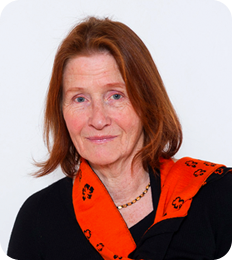

|  | Sona’st sai Osho õpilane 1975. aastal Londonis, kus ta õppis tolle aja uusi teraapiavorme. 1976 liitus ta Ashramiga Pune’is Indias, kus ta elas ja töötas kuni aastani 1981. Ta on olnud Osho Kommuuni liige Saksamaal Colgne ning elanud 6 kuud Osho Kommuunis Oregonis, USAs. Alates 1986. aastast on ta juhendanud Saksamaal tervendamispraktikaid ning osalenud Gurdjeffi kooli õpingutes. Olles enne Oshoga kohtumist õppinud Ida-Euroopa ajalugu ja vene keelt, läks ta 1989. aastal Nõukogude Liitu meditatsiooni tehnikaid ja kehatööd õpetama ning elas St. Peterburis kuni 1996. aastani. Peale seda, olles rajanud ja juhtinud 13 aastat kena seminarikeskust Bavaria metsade vahel, kolis ta Eestisse, et ehitada väike mediteerismiskohake maa lõunakandis. Alates 2013 suvest pakub ta seminare ja individuaalseid seansse Live Zen meditatsioonikeskuses, Põlva lähistel. |
||